Ventas con vale, inventario de los dos almacenes, comisiones de gestores y asesores, dinero en caja e incidencias, y el cierre general listo para enviar por WhatsApp. Funciona sin internet y guarda todo en el iPhone.
Versión 1.0 · Dirección de la app: https://marcoh03.github.io/registro_ekotek/
Contenido
Instalar la app en el iPhone
Primer uso: preparar los datos
La pantalla Hoy
La rutina de cada turno
Registrar una venta
Cómo se reparte el dinero de una venta
Ver, editar, anular y entregar ventas
Inventario
Conteo de inventario
¿Dónde buscar? (almacén más conveniente)
Entradas, traslados, salidas y ajustes
Importar el stock desde un cierre
Dinero en caja
Incidencias
Gestores y sus pagos
Liquidación semanal (domingo y lunes)
El cierre general
Ajustes
Copias de seguridad
Preguntas frecuentes
Idea generalCada cosa que pasa en el turno se anota una sola vez en la app (una venta, un traslado, un conteo, un pago…). A partir de esas anotaciones la app calcula sola el stock de cada almacén, el dinero de cada caja, lo que se le debe a cada gestor y el texto del cierre general.
1Instalar la app en el iPhone
La app es una página web que se instala en la pantalla de inicio y desde ese momento funciona como una aplicación más, también sin conexión. La primera vez sí hace falta internet para descargarla.
Abre Safari (tiene que ser Safari, no Chrome ni WhatsApp) y entra en marcoh03.github.io/registro_ekotek.
Espera unos segundos a que cargue del todo; en ese momento se guarda en el teléfono para usarla sin internet.
Toca el botón Compartir (el cuadrado con la flecha hacia arriba) en la barra de Safari.
Desliza y elige Añadir a pantalla de inicio. Deja el nombre “Ekotek” y toca Añadir.
Abre la app siempre desde el icono verde de la pantalla de inicio. Se abre a pantalla completa, sin la barra de Safari.
ImportanteLos datos que se guardan dentro de la app instalada son distintos de los de Safari. Usa siempre el icono de la pantalla de inicio para que todo quede en el mismo sitio.
Actualizaciones
Cuando se publique una versión nueva, al abrir la app con internet aparecerá una barra azul: “Hay una nueva versión. Toca para actualizar.” Al tocarla se recarga con la versión nueva. Tus datos no se pierden al actualizar.
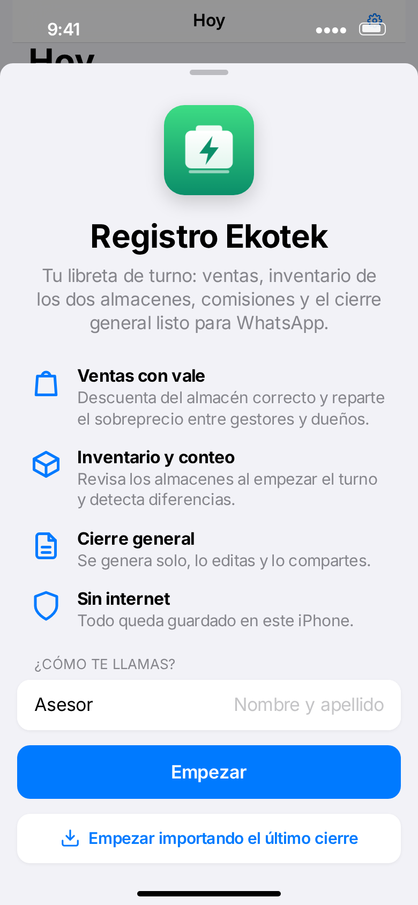
Pantalla de bienvenida la primera vez que se abre.
2Primer uso: preparar los datos
En la pantalla de bienvenida escribe tu nombre (aparece en el cierre como “Asesor Comercial”). Después lo más rápido es tocar Empezar importando el último cierre:
En WhatsApp, mantén pulsado el último cierre general que se envió y elige Copiar.
En la app, toca Pegar desde el portapapeles (o mantén pulsado el cuadro y elige Pegar).
Toca Analizar. La app busca la sección 📦 EN STOCK y lee cada línea de cada almacén (CERRO y LA LISA).
Revisa la lista: “Existe” significa que el producto ya estaba en el catálogo; “Producto nuevo” se creará. Las líneas con “(Incidencia)” se marcan.
Toca Aplicar. El stock de cada almacén queda exactamente igual que en el texto.
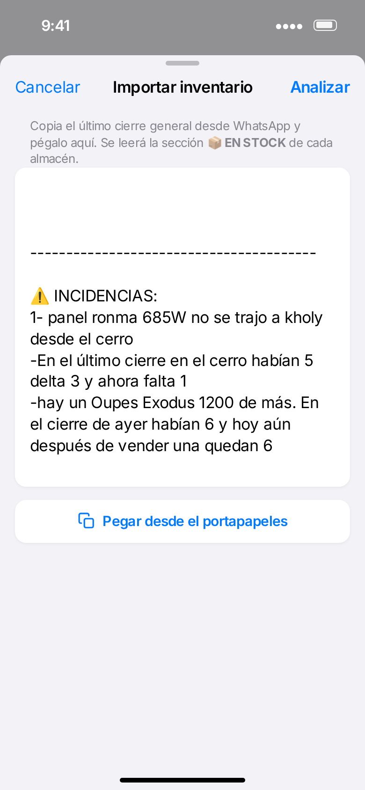
Pegar el último cierre general para cargar el inventario.
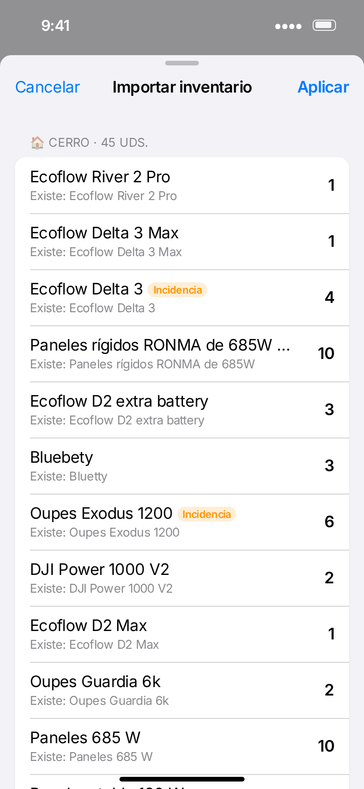
Revisión antes de aplicar.
Después de importar
Productos repetidos. En los cierres a veces el mismo producto se escribe distinto (“Bluebety” y “Bluetty”, “Dji 1000 V2” y “DJI Power 1000 V2”). Abre uno de ellos en Inventario y usa Fusionar con otro producto: se unen el stock y el historial, y el nombre viejo se recuerda para futuras importaciones.
Precios. En Ajustes → Catálogo de productos toca cada producto y escribe el precio de la empresa (sin comisión). También se puede poner al registrar la primera venta de ese producto: si el precio estaba vacío, se guarda solo.
Gestores. No hace falta darlos de alta antes: se crean al registrar una venta (botón “Nuevo gestor”) o desde la pestaña Gestores con +.
Dinero inicial en caja. Abre cada caja desde Hoy y usa Arqueo para escribir lo que hay contado. Ver el capítulo 13.
3La pantalla Hoy
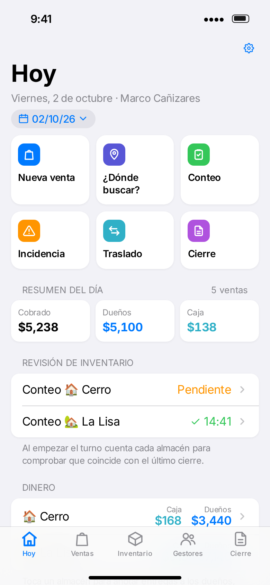
Parte superior.
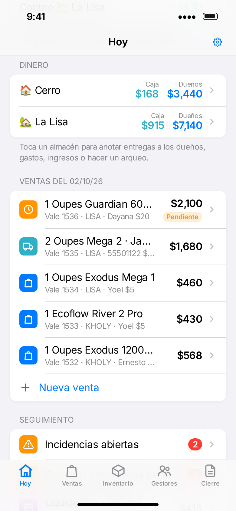
Parte inferior.
Es el centro del turno. En la parte de abajo hay cinco pestañas: Hoy, Ventas, Inventario, Gestores y Cierre. Arriba a la derecha está la rueda de Ajustes.
Fecha de trabajo (botón azul con el calendario): todo lo que registres usa esta fecha. Si el turno pasa de medianoche puedes seguir con la fecha del día anterior; la app muestra un aviso con el botón “Volver a hoy”.
Accesos rápidos: Nueva venta, ¿Dónde buscar?, Conteo, Incidencia, Traslado y Cierre.
Resumen del día: número de ventas, total cobrado, comisiones de gestores y lo que corresponde a los dueños.
Revisión de inventario: indica si ya contaste cada almacén hoy (✓ con la hora) o si está pendiente.
Dinero en caja de cada almacén. Tócalo para ver movimientos o registrar entregas, gastos y arqueos.
Ventas del día, y en Seguimiento: incidencias abiertas, compras anticipadas pendientes y la liquidación semanal.
Los domingos aparece un aviso morado para preparar la liquidación semanal, y si hace más de 7 días que no exportas una copia de seguridad aparece un aviso naranja.
4La rutina de cada turno
Al empezar: conteo de inventario. Toca Conteo, elige el almacén y escribe lo que cuentas. Si algo no coincide con el último cierre, la app ajusta el stock y crea la incidencia (“En el Cerro había 5 Ecoflow Delta 3 y ahora hay 4 (falta 1)”). Repite con el otro almacén.
Arqueo de caja (recomendado): abre cada caja y comprueba que el dinero coincide.
Cuando entra un pedido: usa ¿Dónde buscar? para ver en qué almacén hay el producto y cuál queda más cerca del cliente. Desde ahí mismo puedes registrar la venta.
Cada venta:Nueva venta con su número de vale, productos, lo cobrado y la comisión de cada gestor.
Durante el día: registra traslados entre almacenes, mercancía que llega, entregas de dinero a los dueños e incidencias en cuanto ocurran.
Al terminar: pestaña Cierre → revisa la lista de comprobación, lee el texto, corrige lo que haga falta, Guardar y Enviar por WhatsApp.
Los domingos: Gestores → Liquidación semanal para saber cuánto entregar el lunes a cada gestor y a cada asesor.
ConsejoAnota cada venta en el momento. Así el stock que ves es siempre el real y el cierre sale solo, sin tener que repasar papeles al final.
5Registrar una venta
Toca Nueva venta (en Hoy o el + de Ventas). Campos:
Fecha: la fecha de trabajo (se puede cambiar).
Nº de vale: el número del vale. Si lo dejas vacío la app pregunta antes de guardar; si el número ya existe también avisa.
Tipo de venta:
Recogida: el cliente recoge en el punto de venta. Descuenta el stock ese día.
Mensajería: se envía al cliente. Descuenta el stock ese día y en el cierre aparece como “🚚 Mensajerías”. Permite anotar la dirección.
Anticipada: el cliente paga ahora y recoge más adelante. El dinero cuenta hoy, pero el stock no se descuenta hasta que se marque como entregada. Exige el nombre del cliente.
Almacén: de dónde sale el producto (Cerro → punto de venta KHOLY; La Lisa → LISA). Si ya elegiste el municipio del cliente, la app te avisa si el almacén más cercano es otro.
Productos: Añadir producto abre el buscador con el stock de cada almacén. Con −+ cambias la cantidad, y “Precio u.” es el precio de la empresa por unidad. Debajo verás cuántos hay disponibles en ese almacén (en verde si alcanza, en rojo si no).
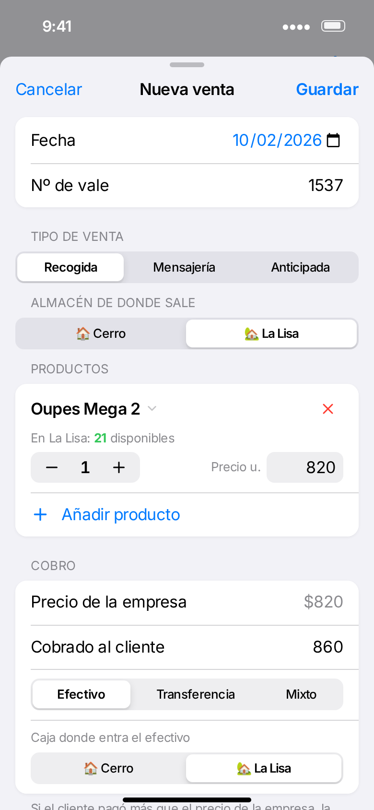
Formulario de nueva venta.
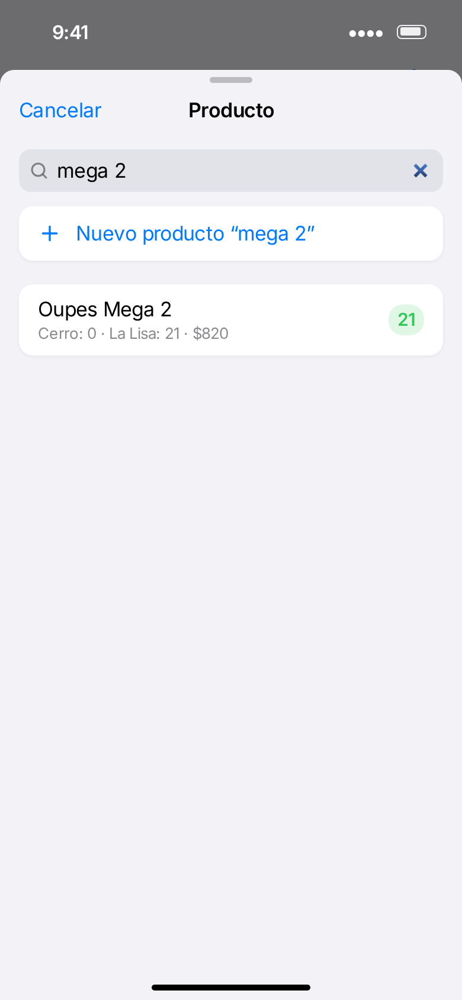
Buscador de productos con el stock de cada almacén.
Cobrado al cliente: lo que pagó realmente el cliente. Si lo dejas vacío se usa el precio de la empresa.
Método: Efectivo, Transferencia o Mixto (en Mixto escribes cuánto fue en efectivo). Solo el efectivo entra en la caja. Puedes elegir en qué caja entra.
Comisión de gestores: Añadir gestor, elige o crea el gestor y escribe su comisión. Al añadir el primero, la app propone todo el sobreprecio; cámbialo si al gestor le toca menos. Se pueden poner varios gestores en la misma venta.
Cliente: nombre, teléfono, municipio (ayuda a elegir almacén) y dirección en mensajería.
Otros: el asesor (por defecto tú) y notas libres.
Toca Guardar. Si no hay stock suficiente en el almacén elegido, la app avisa y te deja registrarla igualmente (quedará stock negativo, que se marca en la revisión del cierre para que lo corrijas).
6Cómo se reparte el dinero de una venta
Mientras escribes, el bloque Reparto del dinero se actualiza solo:
Concepto
Cómo se calcula
Precio de la empresa
Cantidad × precio unitario de cada producto
Cobrado al cliente
Lo que pagó el cliente
Sobreprecio (extra)
Cobrado − precio de la empresa
Comisión de gestores
Suma de lo anotado para cada gestor
Extra para los dueños
Sobreprecio − comisión de gestores
Total para los dueños
Cobrado − comisión de gestores
Ejemplo. Una Oupes Mega 2 cuesta $820. El gestor Ernesto se la vendió al cliente por $860 y a él le tocan $25:
Los $25 se suman a la cuenta de Ernesto (se le pagan en la liquidación semanal) y aparecen en el cierre en “💳 COMISIONES”. Si un mismo gestor tiene varias ventas en el día, el cierre lo muestra así: “Yoel: 5 + 5 = 10 USD”.
¿Y si la comisión la paga la empresa?Si el cliente pagó el precio normal pero al gestor le corresponde comisión, anótala igual. El sobreprecio será 0, el “extra para los dueños” saldrá negativo y el total para los dueños será el precio menos la comisión.
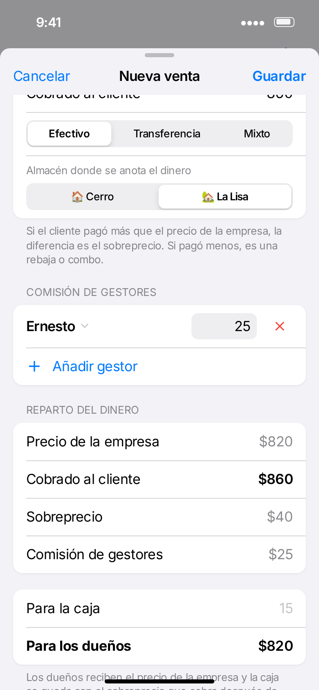
Bloque “Reparto del dinero” del formulario.
7Ver, editar, anular y entregar ventas
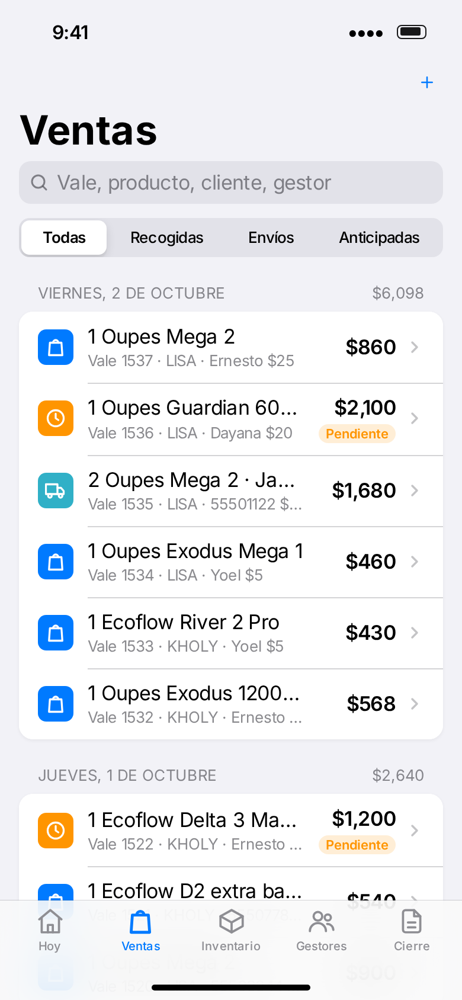
Pestaña Ventas.
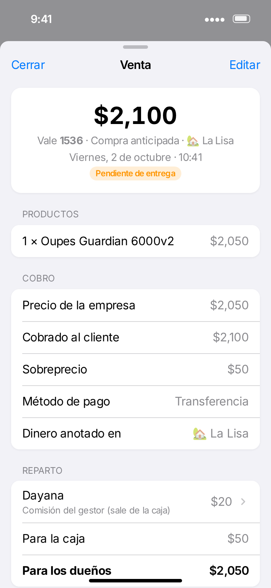
Detalle de una venta.
La pestaña Ventas muestra todas las ventas agrupadas por día con el total de cada día. Busca por número de vale, producto, cliente o gestor, y filtra por Recogidas, Envíos o Anticipadas (las pendientes de entrega aparecen primero). El icono indica el tipo: bolsa azul (recogida), camión (mensajería) y reloj naranja (anticipada).
Al tocar una venta se abre su detalle con el reparto y el cliente. Desde ahí:
Editar: cambia cualquier dato. El stock, la caja y las comisiones se recalculan solos.
Marcar como entregada (solo anticipadas): pregunta de qué almacén sale y descuenta el stock con la fecha de trabajo. En el cierre de ese día aparece en Recogidas como “(compra anticipada)”.
Anular venta: la venta queda tachada y se devuelven stock, dinero y comisiones. Se puede restaurar.
Eliminar venta: la borra por completo (por ejemplo, si se registró dos veces).
8Inventario
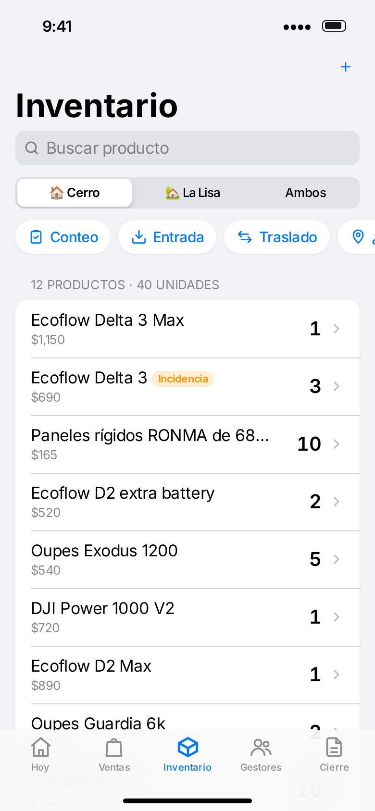
Stock de un almacén.
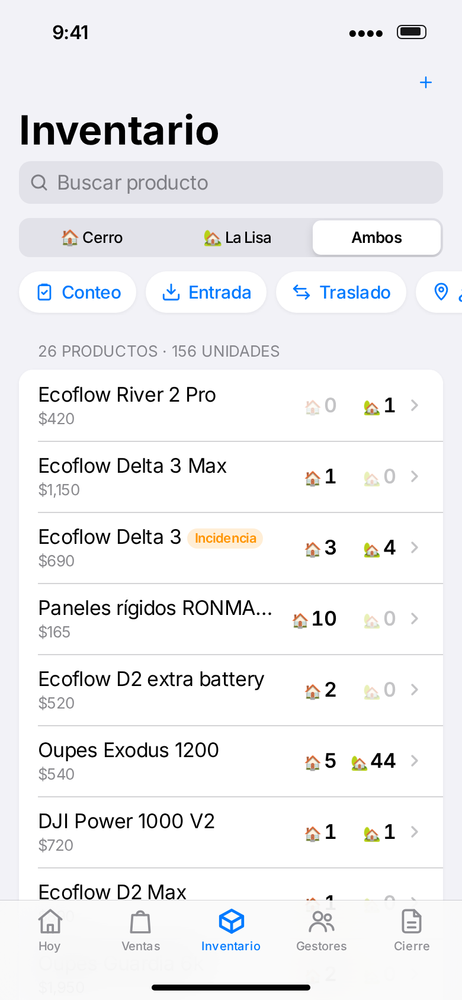
Vista “Ambos”: 🏠 Cerro y 🏡 La Lisa.
Arriba eliges el almacén o Ambos para comparar. Los productos sin stock se ocultan (botón al final para mostrarlos). La etiqueta naranja Incidencia indica que el producto tiene una incidencia abierta en ese almacén; en el cierre aparecerá como “(Incidencia)”.
Los botones de acceso rápido son Conteo, Entrada, Traslado y ¿Dónde buscar?, y el + de arriba ofrece además nuevo producto, salida/baja e importar desde un cierre.
Ficha de producto
Al tocar un producto ves el total de unidades, el precio, el stock por almacén y el historial de movimientos: ventas, entregas, entradas, traslados, ajustes y conteos, con fecha y nota. Sirve para averiguar de dónde viene una diferencia.
Toca un almacén para ajustar la cantidad a mano (con motivo) o reportar una incidencia de ese producto.
Editar: nombre, precio y “otros nombres” (los nombres alternativos con que aparece en los cierres).
Fusionar con otro producto: une dos productos repetidos.
Eliminar producto: solo si nunca tuvo movimientos; si no, usa Fusionar.
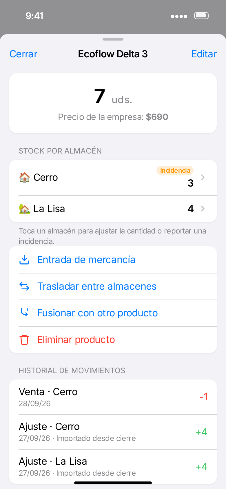
Ficha de producto.
9Conteo de inventario
Es la revisión inicial del turno. Toca Conteo y elige el almacén.
Cada producto muestra lo que dice el sistema (“Sistema: 5”). Escribe lo que cuentas o usa −+.
Las casillas vacías se consideran correctas, así que solo tienes que tocar lo que no coincide.
Las filas con diferencia se ponen en naranja con la diferencia (+1, −2…).
Mostrar todos los productos incluye los que tienen stock 0 (por si aparece uno que no debería estar).
Crear incidencias por diferencias (activado) genera el texto de la incidencia automáticamente.
Si todo coincide, toca Todo coincide con el sistema.
Al guardar, el stock queda igual a lo contado y el conteo aparece como hecho (✓) en Hoy y en la revisión del cierre.
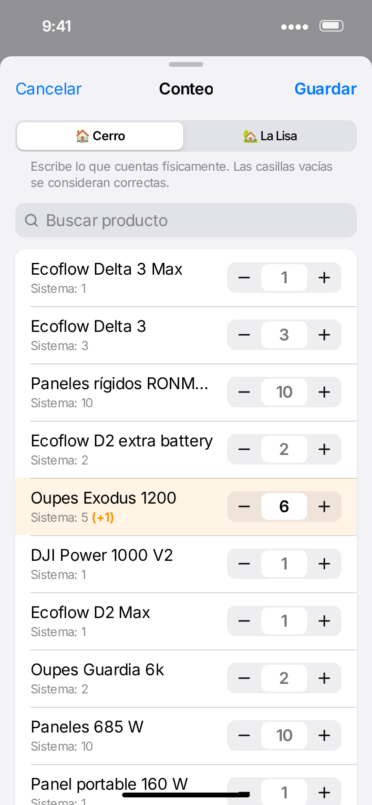
Conteo con una diferencia (+1).
10¿Dónde buscar?
Sirve para decidir de qué almacén sacar un pedido.
Añade los productos del pedido y sus cantidades.
Elige el municipio del cliente.
La tabla muestra el stock de cada almacén (verde si alcanza, rojo si no) y marca con 📍 el almacén más cercano.
La recomendación elige el almacén más cercano que tenga todo el pedido; si no lo tiene, el otro; si ninguno lo tiene completo, te avisa para dividir el pedido.
Registrar venta con este pedido abre la nueva venta con los productos y el almacén ya puestos.
Qué almacén queda más cerca de cada municipio se configura en Ajustes → Municipios y cercanía. Puedes añadir repartos o pueblos que no estén en la lista.
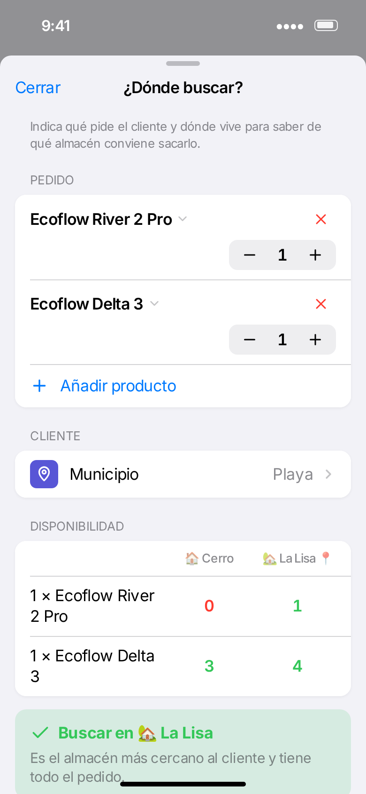
Recomendación según stock y cercanía.
11Entradas, traslados, salidas y ajustes
Todo cambio de stock que no sea una venta se registra con uno de estos movimientos (Inventario → botones o +):
Movimiento
Cuándo usarlo
Efecto
Entrada
Llega mercancía nueva a un almacén.
Suma al almacén.
Traslado
Se lleva mercancía de un almacén al otro (por ejemplo, del Cerro a Kholy/La Lisa).
Resta en el origen y suma en el destino.
Salida / baja
Sale producto sin venta: rotura, garantía, devolución.
Resta del almacén.
Ajuste
Corregir a mano una cantidad (desde la ficha del producto).
Deja la cantidad exacta que escribas.
Conteo
Revisión física del almacén.
Ajusta y crea incidencias por diferencias.
Cada movimiento lleva fecha y una nota opcional, y queda en el historial del producto.
Si un traslado no se hizoSi se acordó un traslado pero la mercancía no llegó (“el panel RONMA no se trajo a Kholy desde el Cerro”), no registres el traslado: crea una incidencia con ese texto, almacén y producto. Cuando llegue, registra el traslado y marca la incidencia como resuelta.
12Importar el stock desde un cierre
Además de al empezar, puedes importar en cualquier momento (Ajustes → Importar stock desde un cierre o Inventario → +). Útil si otro asesor hizo el turno y quieres partir de su cierre.
Se reconocen los formatos habituales: “- 1 Ecoflow River 2 Pro”, “1-Oupes B2”, “- 7-Bluetty”, “-10 Paneles 685 W”.
Los títulos de almacén se reconocen por su nombre (CERRO, LA LISA), configurables en Ajustes → Almacenes.
Poner a 0 lo que no aparece: si un producto no está en el texto de ese almacén, su stock pasa a 0.
Crear incidencias marcadas: los productos con “(Incidencia)” generan una incidencia abierta.
13Dinero en caja
Cada almacén tiene su caja. Se abre desde Hoy → Dinero en caja. El saldo se calcula así:
Caja = efectivo de las ventas + ingresos − entregas a los dueños − gastos − pagos hechos desde la caja ± arqueos
El efectivo de las ventas entra solo (las transferencias no).
Entrega a dueños: el dinero que se entrega a los jefes.
Gasto: transporte, materiales…
Ingreso: dinero que entra sin ser una venta.
Arqueo: escribe lo que hay contado. Si no coincide, la app registra la diferencia y ofrece crear una incidencia (“faltan $5”). Úsalo también para poner el saldo inicial.
El cierre muestra el dinero en caja de cada almacén al final del día del cierre. Para borrar un movimiento manual, tócalo en la lista.
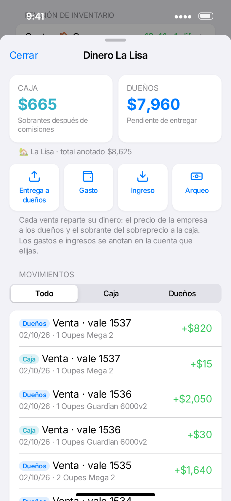
Caja de La Lisa con sus movimientos.
14Incidencias
Una incidencia es cualquier cosa que los jefes deben saber: faltantes, sobrantes, mercancía que no se trasladó, equipos con problemas, diferencias de caja…
Créala con Incidencia en Hoy, con Nueva en la lista de incidencias o desde la ficha de un producto.
Escribe el texto tal como quieres que salga en el cierre. Opcionalmente elige almacén y producto: entonces ese producto aparecerá con “(Incidencia)” en el stock del cierre.
Toca una incidencia para marcarla como resuelta, editarla o eliminarla.
En el cierre de un día aparecen las incidencias creadas ese día y las que siguen abiertas de días anteriores (con “desde dd/mm/aa”). Al resolverla deja de aparecer en los cierres siguientes.
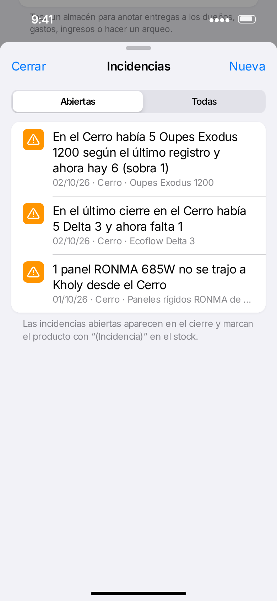
Lista de incidencias.
15Gestores y sus pagos
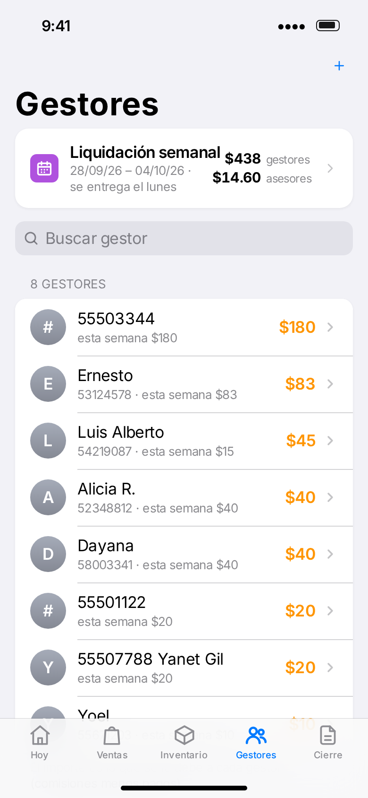
Lista de gestores con lo que se les debe.
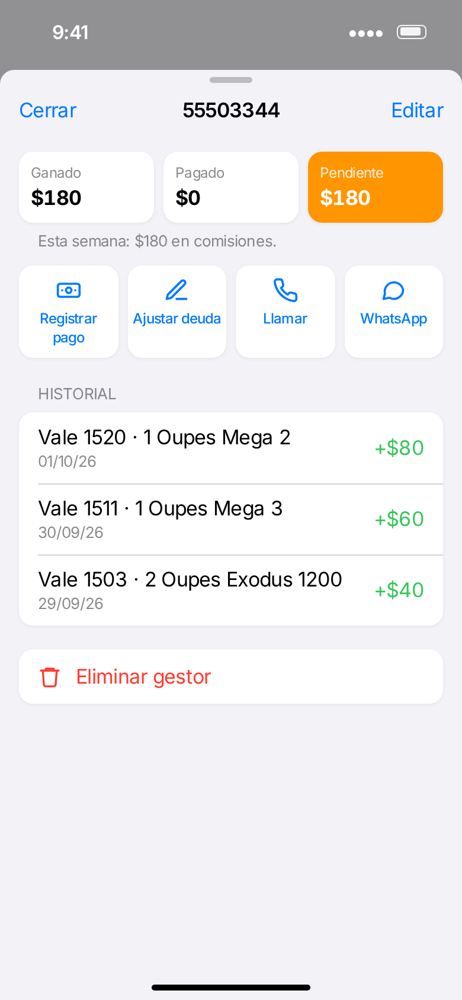
Cuenta de un gestor.
La pestaña Gestores muestra cada gestor con lo que se le debe (en naranja) o “Al día”. Un gestor puede tener nombre, número o ambos (por ejemplo “55507788 Yanet Gil”).
La cuenta de un gestor muestra Ganado (todas sus comisiones), Pagado y Pendiente, y el historial de cada comisión (con su vale) y cada pago.
Registrar pago: importe (propone lo pendiente), fecha y si sale de una caja (se descuenta de esa caja).
Llamar y WhatsApp abren directamente la llamada o el chat (a los números de 8 cifras se les añade el prefijo 53).
Para borrar un pago hecho por error, tócalo en el historial.
16Liquidación semanal
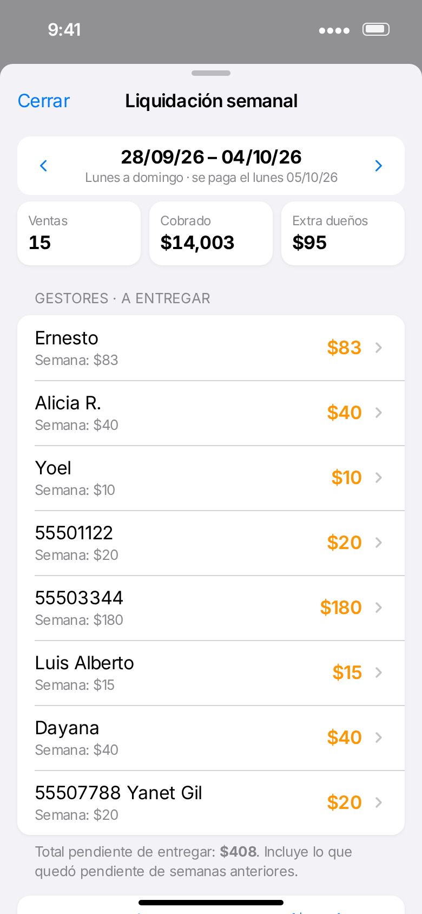
Gestores a pagar.
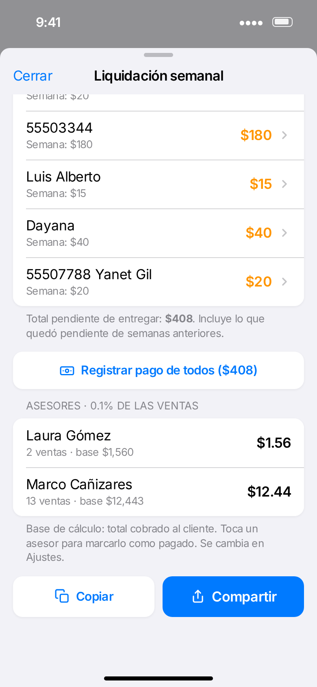
Comisión de los asesores.
Los domingos se calcula lo que hay que entregar el lunes. Ábrela en Gestores → Liquidación semanal (o desde el aviso del domingo en Hoy). La semana va de lunes a domingo; con las flechas ‹ › cambias de semana. El lunes se abre por defecto la semana que acaba de terminar.
Gestores · a entregar: para cada gestor, sus comisiones de la semana y el total pendiente (incluye lo que quedara sin pagar de semanas anteriores). Toca uno para registrar su pago, o Registrar pago de todos el lunes.
Asesores: cada asesor cobra un porcentaje (0,1 % por defecto) de las ventas de la semana registradas con su nombre. Toca un asesor para marcar su comisión como pagada.
Compartir o Copiar genera un texto con la liquidación para enviarlo a los jefes.
Ajustar el cálculoEn Ajustes → Comisiones cambias el porcentaje de los asesores y si se calcula sobre el total cobrado o sobre el precio de la empresa. Ten en cuenta que la app solo conoce las ventas registradas en este iPhone.
17El cierre general
La pestaña Cierre genera el texto con el mismo formato que se usa en el grupo de WhatsApp.
Revisión antes de enviar
Conteo de inventario: si falta contar algún almacén.
Ventas registradas y cuántas no tienen número de vale.
Stock negativo: productos vendidos sin stock en el sistema (revisa si falta una entrada o un traslado).
Incidencias abiertas.
Qué incluye el texto
Encabezado con fecha y asesor.
Por cada punto de venta (KHOLY, LISA): Recogidas, Mensajerías y Compras anticipadas del día.
EN STOCK de cada almacén al final del día, con “(Incidencia)” donde corresponda.
DINERO EN CAJA de cada almacén.
COMISIONES de los gestores del día.
LISTADO DE COMPRAS ANTICIPADAS pendientes de entregar: vale | cliente | equipos.
INCIDENCIAS.
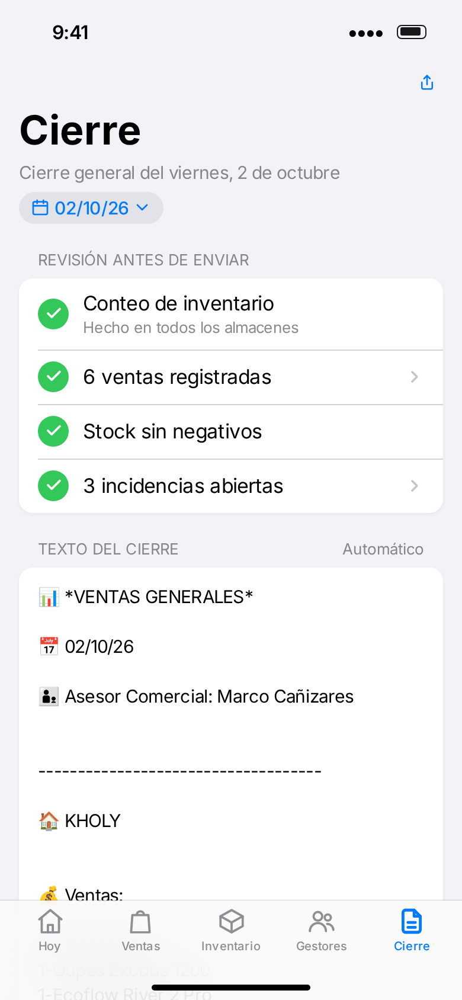
Revisión antes de enviar.
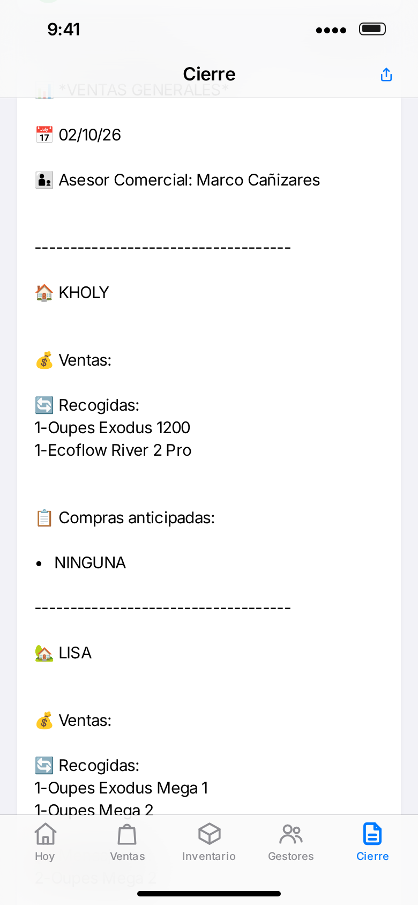
El texto se puede editar directamente.
Editar y enviar
Mientras no lo toques, el texto se actualiza solo con cada venta (“Automático”).
Puedes escribir directamente en el texto para corregir o añadir algo; pasa a “Editado”.
Guardar guarda esa versión del día en “Cierres guardados”.
Regenerar vuelve a crear el texto con los datos actuales (pierdes lo escrito a mano).
Copiar lo copia; Enviar por WhatsApp abre el menú de compartir de iOS para elegir WhatsApp y el chat de los jefes.
Con el botón de la fecha puedes ver o rehacer el cierre de otro día; el stock y la caja se calculan a la fecha elegida.
En Ajustes → Texto del cierre puedes añadir el número de vale y el importe de cada venta a las líneas de ventas.
18Ajustes
Asesor de turno: tu nombre. Si otro asesor usa este iPhone, cámbialo al empezar su turno.
Almacenes: nombre, “título en ventas” (KHOLY, LISA), “título en stock” (CERRO, LA LISA) y emoji de cada almacén, tal como salen en el cierre.
Catálogo de productos: todos los productos con su precio.
Municipios y cercanía: almacén más cercano para cada lugar.
Importar stock desde un cierre.
Comisiones: porcentaje de asesores, base de cálculo y moneda.
Texto del cierre: incluir número de vale e importe.
Copia de seguridad: exportar y restaurar.
Ayuda: este manual y la versión de la app.
Borrar todos los datos: pide escribir BORRAR para confirmar.
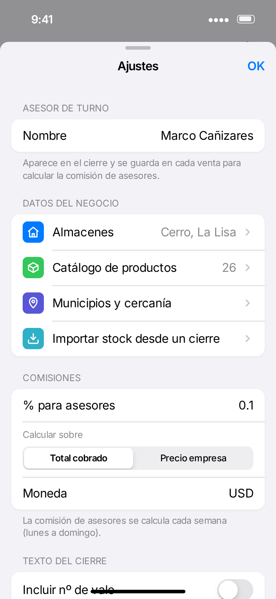
Ajustes.
19Copias de seguridad
Toda la información (ventas, inventario, gestores, caja, cierres) se guarda solo dentro de este iPhone. No se sube a internet ni a GitHub. Por eso es importante hacer copias:
Ajustes → Exportar copia de seguridad.
Se abre el menú de compartir con un archivo ekotek-respaldo-AAAA-MM-DD.json. Guárdalo en Archivos (iCloud Drive) o envíatelo por WhatsApp/correo.
Para recuperarlo (en otro iPhone o tras reinstalar): Ajustes → Restaurar copia de seguridad y elige el archivo. Reemplaza todos los datos actuales.
Cuándo se pueden perder los datosSi borras la app de la pantalla de inicio, si borras los datos de Safari o si cambias de teléfono. Haz una copia al menos una vez por semana (la app te lo recuerda) y siempre antes de cambiar de móvil.
La copia también sirve para pasar la información a otro asesor: él restaura tu copia en su iPhone y sigue desde ahí.
20Preguntas frecuentes
¿Necesito internet?
Solo la primera vez para instalarla y cuando haya actualizaciones. Todo lo demás funciona sin conexión. El manual en PDF sí necesita internet para abrirse desde la app.
Me equivoqué en una venta.
Ventas → toca la venta → Editar. Si no debía existir, Anular o Eliminar. Todo se recalcula.
El stock de la app no coincide con lo que hay.
Mira el historial en la ficha del producto para ver qué movimiento lo cambió. Corrígelo con un conteo o un ajuste; si la diferencia es real, deja la incidencia.
Un producto sale con dos nombres distintos.
Ábrelo en Inventario y usa Fusionar con otro producto.
Un gestor cobró parte de la comisión por adelantado.
Registra un pago en su cuenta con ese importe; la liquidación del domingo restará lo ya pagado.
Hice el cierre y después registré otra venta.
Pestaña Cierre → Regenerar y vuelve a guardar y enviar.
No me sale el botón de compartir para WhatsApp.
Usa Copiar y pega el texto en el chat de WhatsApp.